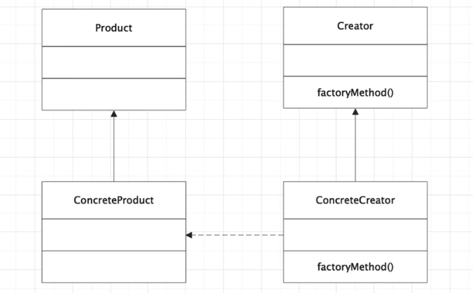

首页 > 编程笔记
Python工厂方法模式（附带源码）
工厂方法模式定义了一个创建对象的接口，由子类决定要实例化的类是哪一个。工厂方法让类把实例化推迟到子类。
所有工厂方法模式都是用来封装对象的创建过程的。工厂方法模式通过让子类决定该创建的对象是什么，来达到对对象的创建过程进行封装的目的。
原本是由一个对象负责所有具体的实例化，现在变成多个子类负责实例化。
在图1中，有一个包含 factoryMethod() 方法的抽象类 Creator。FactoryMethod() 方法负责创建指定类型的对象。ConcreteCreator 类提供了一个实现 Creator 抽象类的 factoryMethod() 方法，这种方法可以在运行时修改已创建的对象。ConcreteCreator 创建 ConcreteProduct，并确保其创建的对象实现了 Product 类，同时为 Product 接口中的所有方法提供相应的实现。
简而言之，Creator 接口的 factoryMethod() 方法和 ConcreteCreator 类共同决定了要创建 Product 的哪个子类。因此，工厂方法模式定义了一个接口来创建对象，但具体实例化哪个类则是由它的子类决定的。
本文列举一个现实世界的场景来理解工厂方法模式的实现。比如比萨生意火爆，现在有很多人要开加盟店，不同地区的加盟店的口味有差异。PizzaStore 有个不错的订单系统，希望所有加盟店对订单的处理一致。
各区域比萨店之间的差异在于它们制作的比萨的风味（如 NYStyle 饼薄、 ChicagoStyle 饼厚等）不同，我们现在让createPizza() 方法来应对这些变化，负责创建正确种类的比萨。做法是让 PizzaStore 的各个子类负责定义自己的 createPizza() 方法，然后我们会得到 PizzaStore 的具体类。
请看下面的 Python 代码：
工厂方法模式的适用场景：
工厂方法模式的优点：
工厂方法模式的缺点：
所有工厂方法模式都是用来封装对象的创建过程的。工厂方法模式通过让子类决定该创建的对象是什么，来达到对对象的创建过程进行封装的目的。
原本是由一个对象负责所有具体的实例化，现在变成多个子类负责实例化。

图1：工厂方法模式
图1：工厂方法模式
在图1中，有一个包含 factoryMethod() 方法的抽象类 Creator。FactoryMethod() 方法负责创建指定类型的对象。ConcreteCreator 类提供了一个实现 Creator 抽象类的 factoryMethod() 方法，这种方法可以在运行时修改已创建的对象。ConcreteCreator 创建 ConcreteProduct，并确保其创建的对象实现了 Product 类，同时为 Product 接口中的所有方法提供相应的实现。
简而言之，Creator 接口的 factoryMethod() 方法和 ConcreteCreator 类共同决定了要创建 Product 的哪个子类。因此，工厂方法模式定义了一个接口来创建对象，但具体实例化哪个类则是由它的子类决定的。
本文列举一个现实世界的场景来理解工厂方法模式的实现。比如比萨生意火爆，现在有很多人要开加盟店，不同地区的加盟店的口味有差异。PizzaStore 有个不错的订单系统，希望所有加盟店对订单的处理一致。
各区域比萨店之间的差异在于它们制作的比萨的风味（如 NYStyle 饼薄、 ChicagoStyle 饼厚等）不同，我们现在让createPizza() 方法来应对这些变化，负责创建正确种类的比萨。做法是让 PizzaStore 的各个子类负责定义自己的 createPizza() 方法，然后我们会得到 PizzaStore 的具体类。
请看下面的 Python 代码：
class PizzaStore(object):
def ceatePizza(self):
pass
class NYStylePizzaStore(PizzaStore):
def ceatePizza(self):
print("NYStyle饼薄")
class ChicagoStylePizzaStore(PizzaStore):
def ceatePizza(self):
print("ChicagoStyle饼厚")
class Factory(object):
@staticmethod
def create(type):
if type == "ChicagoStyle":
return ChicagoStylePizzaStore()
if type == "NYStyle":
return NYStylePizzaStore()
if _ _name_ _ == '_ _main_ _':
type = "ChicagoStyle"
Factory.create(type).ceatePizza()
工厂方法模式的适用场景：
- 客户端不知道它所需要的对象的类。
- 抽象工厂类通过其子类来指定创建哪个对象。
- 利用面向对象的多态性和里氏代换原则，实现在程序运行时子类覆盖父类对象，从而使得系统更容易扩展。
工厂方法模式的优点：
- 用户只需要关心所需产品对应的工厂类，无须关心创建细节，甚至无须知道具体产品的类名。
- 所有的具体工厂类都具有同一抽象父类，被称为多态工厂模式。
- 符合开闭原则，新增产品只需要添加工厂类和具体产品，无须修改代码，扩展性好。
工厂方法模式的缺点：
- 添加一个新的产品时，系统中类的个数会增加，将导致增加系统的复杂性，有更多的类需要编译和运行，且会增加系统开销。
- 由于考虑到系统的可扩展性，因此需要引入抽象层，在客户端代码中均使用抽象层进行定义，增加了系统的抽象性和理解难度。
关注公众号「站长严长生」，在手机上阅读所有教程，随时随地都能学习。内含一款搜索神器，免费下载全网书籍和视频。

微信扫码关注公众号